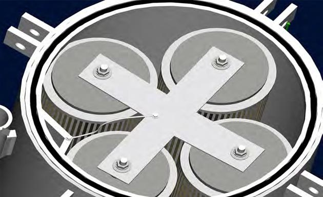

Session 8.2
Filter Types
 (1).png)
 (2).png)
 (3).png)
 (4).png)
- The next stage of filtration devices after the strainers is the Micronic Filters.
- Microfilters are designed to remove fine particulate, such as rust, dirt, sand and pipe scale, from aviation fuels, which cannot be removed by the strainers.
- Aviation fuel is passed through a filter with a pleated paper or synthetic fibre medium to remove solids with particle sizes larger than the pore size rating of the filter.
- Typically, filters with a nominal pore size of ten micrometers (microns) are used for Jet Fuel.
- These filters are commonly called pre-filters because they are mostly used before filter/separators or micronic filters because they are rated by the size of particulate removed, e.g., ten microns.
- In most fuel cleanup systems, particulate removal precedes water removal for cost reasons.
- If the particulate matter were not removed, it would shorten the life of filter elements used in the subsequent water removal process.
- Particulate removal elements are less expensive than water removal elements.
- In short Micronic filters or per-filters are predominantly used prior to Filter/Separator to protect and prolong Coalescer element life.
- Micronic filters are specifically designed to remove ONLY DIRT particles from a fuel stream
- Micronic filters are used upstream of filter/water separators in jet fuel systems to protect the more expensive coalescer elements where high dirt levels are expected.
- Micronic filters have a single stage of elements that filters particles only
- Where micronic filters are used to protect EI 1581 filter water separators they should meet the requirements of EI 1590.
- If the micronic filter in use is not qualified to EI 1590 it shall meet the requirements of EI 1589 Materials compatibility testing for aviation fuel filter elements and fuel sensing devices.
- New filters should be supplied with elements from the same manufacturer as the vessel.
- Element specifications from approved manufacturers are a matter of deciding the nominal rating required.
- Rating of 1.0 or 2.0 microns (and even larger) for jet fuel can often provide an effective pre-filter depending on the contamination level expected.
- Qualified to specification EI 1581
- WATER & PARTICULATE matter are the main sources of contamination in Jet fuel
- FWS plays a significant role in controlling and eliminating this contamination in the downstream supply chain
- Filter Water Separators are devices that not only filter out the particulate contamination but also separate out the free water from the Fuel.
- These filters are extensively used to remove dirt and separate water from fuel at refineries, product terminals, fuel farms and refuelling equipment.
- The removal of dirt and separation is carried out in 2 different stages using two different types of elements:
- Coalescer cartridges are employed as the FIRST STAGE in filter/separator vessels for hydrocarbon fluids.
- Coalescer perform TWO functions:
- Tiny droplets of water contact and adhere to strands of fiberglass.
- Flow pushes the droplets along the strand until they reach an intersection of strands where they combine with other droplets (coalesce) into large drops.
- These large drops are then carried to the outside surface of the cartridge. Having a higher specific gravity than the hydrocarbon fluid, they release and gravity pulls the droplet to the bottom of the vessel.
- The larger the drops, the faster and more efficiently they fall out (see bottom photo).
- In general, particle removal efficiency increases with coalescing efficiency. This is accomplished by employing a tighter, finer filtration media.
- Flow direction is from INSIDE to OUTSIDE of the cartridge. This minimizes surface velocity and helps prevent the water drops from breaking up and being carried downstream.
- The Second stage separates any large droplets from the fuel which might not have time to fall to the sump before entering downstream pipe work.
- Separator Cartridges are employed as the SECOND STAGE in filter/ separator vessels.
- The sole function of the Separator is to REPEL coalesced water drops produced by the first-stage cartridges while allowing hydrocarbon fluids to pass through.
- Water drops settle into the filter/ separator sump and are not carried downstream.
- All particle filtering is done by the first-stage coalescer cartridge.
- Flow direction is from OUTSIDE to INSIDE
- Separator elements are either Teflon or Synthetic screens.
- Pleated paper separators are NO LONGER USED.
- PTFE or Teflon Coated Screen Separator can be reused over many changeout cycles.
- Synthetic Media cartridges can be cleaned a maximum of two times.
- Teflon screen cartridges generate a considerably less static charge
- For intermediate filtration of aviation fuel which does not contain an anti-static additive, Teflon-coated screen elements are preferred where minimum downstream relaxation times cannot be met.
- Spider plates (spiders) are an important part of a filter separator vessel, made of aluminium or stainless steel and are fitted over the ends of various types of filter cartridges within the filter vessel.
- Limited operating experience until now, as this is a relatively new system
- Filter housing shall meet EI 1596
- EI 1582 Similarity Certificate is required
- JIG Bulletin 102:
- Filter Water Separators are categorized based on the end use
- Type S - filter/separators are used at filtration points where SIGNIFICANT levels of both DIRT and WATER can be expected
- Type S-LD - filter/separators are used at filtration points where SIGNIFICANT levels of WATER but minimal amounts of dirt can be expected
- Type S-LW - filter/separators can be used for MOBILE applications where MINIMAL amounts of WATER can be expected in the jet fuel.
- Type S-M - filter/separators is a COMBINATION of S-LD and S-LW specifically intended only for some into aircraft applications like fuller carts or hydrant dispensers
- Category “C” filter/separators are for use in commercial Jet-A or Jet-A1 fuel and are tested in fuel containing anti-static additive Stadis 450 and corrosion inhibitor DCI-4A
- Category “M” filter/separators are for use in military JP-8 or JP-5 fuel. They are tested in fuel containing Stadis 450, DCI-4A, and anti-icing additive Di-EGME
- Category “M100” filter/separators are for use in military JP8+100 fuel. They are tested in fuel containing Stadis 450, DCI-4A, Di-EGME, and thermal stability additive Spec Aid 8Q462
- The EI specification procedures qualify the entire filter/separator, not just the elements. Elements are used in an EI-qualified filter/separator but the qualification would apply to the corresponding elements and vessels as a whole.
- A filter/separator of similar geometry to the tested vessel can be qualified by similarity providing that a complex set of criteria are met. This is particularly significant in establishing EI qualification for existing equipment in the field.
- EI Specification 1582 details the similarity specifications that have to be met in order for a filter/separator to be qualified by similarity.
- A new FWS system (not just element replacement) to comply with EI 1581 6th edition, FWS shall have :
- FILTER MONITORS (including those qualified to EI 1583) SHALL NOT BE USED IN ANY AVIATION FUEL HANDLING SYSTEMS, due to their propensity to release Super-Absorbent Polymer (SAP) into fuel
- Filter monitors shall be removed from all equipment by no later than 01 July 2023.
- EI 1583 specification was WITHDRAWN by the Energy Institute in December 2020.
- It remains the USER’S RESPONSIBILITY to ensure that any filter monitor elements still in use are qualified to EI 1583 7th Edition.
- Filter monitors SHALL NOT BE FITTED in filter water separator vessels or any new equipment.
- Where filter monitors remain in use and until they are completely phased out, they shall be operated and maintained strictly in accordance with requirements set in JIG BULLETIN 105
- dP-Switch are installed to avoid sudden increases in dP or differential overpressure of the MONITOR ELEMENTS that was a major contributory factor to the Surabaya aircraft fueling incident in 2010
- Filter monitors shall never be operated above a differential pressure of 22 psi (see JIG 1, A6.3.4)
- Particulate contamination or excessive water from the HYDRANT SYSTEM could cause a sudden increase in dP during a hydrant servicer fuelling operation
- dP switch is installed to PROTECT the fuelling operation from a sudden rise in dP
- dP switch is set to 22 psi and is activated to AUTOMATICALLY STOP the fuelling operation if a high dP (22 psi) is encountered.
- dP switch is CONNECTED IN PARALLEL with the dP gauge and is LINKED to the deadman and fuelling control system.
- A mechanism to RESET the dP-switch shall be installed to PREVENT RESETTING by the fuelling operator
- dP-Switch shall be installed so that the deadman override DOES NOT RESET and REACTIVATE the system
- DP switches shall meet the hazardous area classification for the installed location.
- Action in Event of Switch Activation
- dp-SWITCH detects the maximum allowed differential pressure across filter elements to automatically stop fuelling processes in case of reached maximum differential pressure
- JIG Bulletin 58, released in January 2013 dp-switches as a minimum requirement for equipment to be installed on all hydrant servicers that are operated to JIG Standards.
- All new hydrant servicers with FILTER MONITOR vessels shall be ordered with a dp switching Device
- All existing hydrant servicers with FILTER MONITOR vessels shall have a dp switching device installed
- Dp-SWITCH is a combination of proximity switches to be mounted close to the still existing mechanical differential pressure gauge and electronics to interact in case of reaching high dp.
- Whenever the mechanical gauge is been introduced with a high dp of more than 22 psi (1,5 bar) the proximity switch becomes active to interact with the safety relay.
- Relay output should be connected to the deadman to automatically stop the fuelling in case of activation.
- Once the safety relay has been set it must be reset by the use of an inbuilt key switch or external key switch to make sure that no one will be able to reset the status without permission.
- Qualified to specification EI 1599 2nd edition
- Dirt Defence Filter can replace Super Absorbent Polymer (SAP)-based filter monitors (FM), without the need for vessel configuration changes (drop-in replacement elements)
- DIRT DEFENCE FILTERS (DDF) like micro-filters REMOVE DIRT AND SOLID PARTICULATES from fuel BUT DO NOT REMOVE FREE WATER
- DDF come in a variety of formats, including 2” and 6” diameter, and can be fitted into existing filter MONITOR VESSELS
- In Dirt Defence Filter the flow direction is from OUT-TO-IN
- Only intended for into-plane use
- DDF are designed to retrofit into existing Filter Monitor vessels WITHOUT modification
- Filter Vessel data plate does not need to change for existing vessels
- But a New Operational data plate is required stating conformance to EI 1599 2nd ed
- 2” (x 30” max) - OUT to IN flow direction
- In to Out is not currently available
- 6” - OUT to IN flow direction
- Qualified to specification EI 1598 2nd edition
- EWS can detect and quantify SMALL amounts of FREE WATER in jet fuel. EWS is designed to CONTINUALLY MONITOR fuel for free water, providing REAL-TIME WATER levels in parts per million (ppm)
- EWS fitted into refuelling vehicle pipework, quantifies free water levels during fueling operations
- Electronic water sensor (EWS) systems
- The mounting position of the AFGUARD® should be horizontal.
- Other angles of inclination are not permitted.
- Do not mount the AFGUARD® overhead.
- Make sure that there is enough space inside the pipe to prevent contact between the rear wall and the mirror during assembling – space for proper installation
- EI 1599 dirt defence filters, when combined with an EI 1598 electronic water sensor, create a system that can be used as a replacement for filter monitors
- The system works by physically removing dirt and particulates as the fuel passes through the filter, while the sensor provides real-time free water content.
- The EWS is connected to the vehicle’s deadman system through a PROGRAM LOGIC CONTROLLER (PLC) to alert the operator and shut down fueling when excessive water is present.
- An indicator/warning light, solidly illuminated, provides continuous feedback when the system is operating properly, and no water is detected.
- When excessive water is present, the system shuts down the flow of fuel and the indicator light flashes.
- When there is no signal from the sensor, the indicator light turns off and the deadman system will not engage.
- Qualified to specification EI 1588
- New barrier technology works like a MICROFILTER; Water Barrier technology FILTERS and PREVENTS WATER from bypassing downstream
- Water droplets are BLOCKED by a HYDROPHOBIC material that is porous to clean, dry fuel
- Water droplets impeded on the surface of the media COALESCE and drop to the bottom of the vessel
- The new surface/barrier technology provides a DROP-IN solution for current 2” diameter filter monitors.
- Exterior dimensions and endcap styles remain the same while media technology are exchanged with new barrier technology.
- DROP-IN solution allows for use with current monitor housings without the need for expensive and costly retrofitting of filtration systems on fuel carts and fueling trucks.
- The new surface/barrier technology provides a DROP-IN solution for current 2” diameter filter monitors.
- The new surface/barrier technology provides a DROP-IN solution for current 2” diameter filter monitors.
- DROP-IN solution allows for use with current monitor housings without the need for expensive and costly retrofitting of filtration systems on fuel carts and fueling trucks.
- Effective against low-water emulsions
- Effective against total water submersion
- Effective when introduced to water slugs at or greater than 101.5 psi (7 bar)
- Effective in fuel with FSII (anti-icing additive)
- Extreme dirt efficiency
- Similarity is a term used to describe the similar performance by different manufacturers.
- imilarity enables users to adopt different manufacturer element sets if suppliers perform poorly or if better pricing or service can be found.
- Qualification of FWS using similarity is specified in EI 1582
- Similarity is the requirement for combinations of filter /separator elements and vessels to meet the EI 1581 specification
- Similarity ensures that an existing or new FWS meets the requirement of EI 1581 when the model/type of elements are changed
- Filter manufacturers qualify a new FWS to EI 1581 on a test rig to cover a specific flow rate range for vessel configuration and specific coalescer and separator elements
- Qualification by Similarity avoids the need for laboratory testing of every FWS system
- EI 1582 is the Similarity specification that contains methodology to ensure that a vessel will meet the performance requirements of EI 1581 without the need for testing
- FWS vessels shall contain only combinations of coalescer and separator elements qualified by a SINGLE MANUFACTURER – unqualified mixes of elements from different manufacturers are not permitted. Example – Velcon coalesce and Facet Separator will not pass the Similarity test
- Similarity allows interchangeability when operators want to change the supplier of the coalescer and separator elements
- EI 1582 includes a PRO-FORMA SHEET (see below) that can be obtained from the manufacturers whenever any of the above changes are made.
- Properly completed Similarity Sheet comprises the DOCUMENTATION THAT CONFIRMS an installed FWS is qualified to the latest edition of EI 1581
- New FWS are usually supplied with elements from the same manufacturer as the vessel model.
- Subsequent element changes may use elements from another manufacturer provided:
- Elements in both stages are from the same manufacturer
- Compliance with EI 1581 requires the use of only approved filter element combinations for each vessel
- There is a Similarity Data Sheet available from the element manufacturer for the specific elements to be used in the specific vessel as per EI 1582
- Element suppliers will supply these upon request, and a copy of the similarity data sheet must be available on-site
- A new supplementary vessel nameplate is fitted to the filter
- Orientation – Vertical or Horizontal
- Flow Pattern
- Coalescer & Separator from the same manufacturer
- Element spacing
- Element types
- Flow per unit area
- Separator Entrance/Face velocity
- Element/Vessel Ratio’s
- Void Volume
- Void volume ratio
- Sump volume
- Properly completed Similarity Sheet comprises the DOCUMENTATION THAT CONFIRMS an installed FWS is qualified to the latest edition of EI 1581
- Properly completed Similarity Sheet comprises the DOCUMENTATION THAT CONFIRMS an installed FWS is qualified to the latest edition of EI 1581
- A supplementary name plate is provided which includes:
- The vessel model and serial number
- Type and quantity of coalescer elements
- Type and quantity of separator elements
- Maximum flow rate for this configuration
- Conversion kit number if applicable
- Compliance details including EI 1581 edition
- The original vessel name plate must always be retained; supplementary name plates may be replaced
- FWS are only really effective at >70% of rated flow
- Micronic performance not flow sensitive; provide better life when ‘over-rated’, 2x the size gives 4X the life.
- De-rate vessel by removing elements and fitting approved blanking pieces
- Remember to change the records
- Maximum RATED FLOW is vessel design flowrate reflecting the configuration of elements supplied and shown on the manufacturer’s plate
- Maximum ACHIEVABLE FLOW is determined by the location where the filter vessel is installed depending on the pumping flowrate and the number of filter vessels installed
- Maximum ACHIEVABLE FLOW should be MARKED on the vessel and noted in the filter record
- Maximum achievable flow rate through each filter vessel in service shall be CALCULATED and COMPARED to the RATED FLOW as shown on the manufacturer’s plate
- Filter vessels SHOULD NOT be operated at flow rates above RATED FLOW
- For filters fed by a common manifold, FLOW CONTROL measures shall be in place to prevent excessive flow through the filter
- If the RATED FLOW of a filter is significantly GREATER than its maximum achievable flow, it may be necessary to DE-RATE the filter by removing some elements from the vessel and replacing them with blank/dummy elements or blinds/caps (for FWS)
- The vessel shall be DE-RATED when the vessel is routinely operated AT LESS THAN 50% of its RATED FLOW
- Before a vessel is DE-RATED, advice shall be sought from the filter manufacturer and Management Of Change (MOC) plan shall be developed and implemented
- The blank/dummy elements or blinds/caps (for FWS) shall meet the Design, Structural and Compatibility requirements of the filter vessel manufacturer
- The blank/dummy elements or blinds/caps (for FWS) shall be installed in accordance with Manufacturers’ Recommendation to achieve an even distribution of flow through the remaining elements
- A new operational data-plate shall be obtained from the filter manufacturer, and filter labels/ marking, documentation and records shall be updated accordingly.
- For FWS, a NEW SIMILARITY CERTIFICATE shall be obtained from the filter manufacturer.
- Once a vessel is DE-RATED, it shall not exceed the
- NEW-RATED FLOW shall always be higher than or equal to the maximum ACHIEVABLE FLOW RATE through the vessel
- If required, make adjustments or modifications to the fuelling system to regulate and reduce the flow rate to the filter vessel
- MICROFILTERS or DIRT DEFENCE elements are designed to operate with a FULL SUITE of elements and/or at LOWER FLOW RATES
- DE-RATING of Filter vessels equipped with MICROFILTERS or DIRT DEFENCE is NOT RECOMMENDED
8.2.1 Micronic Filters (Pre-Filters or Microfilters)
Qualified to specification EI 1590
 (1).png)
 (2).png)
 (1).png)
 (2).png)
Filters Types
Micronic Filters (Pre-Filters)
Note:
Micronic Filters.
8.2.2 Filter Water Separator (FWS)
General
Introduction
1.FIRST STAGE uses COALESCER elements to remove particulates and coalesce water into large water droplets. Coalescing is a process by which dispersed/emulsified water particles are combined into large water drops.
2. SECOND STAGE uses SEPARATOR elements, which repel coalesced water drops, which are then collected in the vessel sump where they can be drained.
 (2).png)
Filter Water Separator (FWS)
COALESCERS
How Coalescers Work
1. coalesce (combine) highly dispersed, emulsified water particles into larger water drops and
2.filter-out particulate contaminants.

SEPARATOR
How Separators Work:

Importance of Spiders
There are FIVE purposes for spiders in vessels:
1.To keep the cartridges separated in order to EQUALIZE FLOW around the cartridges, and to provide paths for the coalesced water drops to fall to the sump
2. To give SUPPORT to the “free” ends of the cartridges (the ends not rigid against the deck plate)
3. To prevent MICROBIAL GROWTH - to keep the coalescer socks from touching each other is to reduce the microbial growth area
4. To meet EI 1581 5th Edition requirements - Specification requires the use of spiders for cartridges longer than 18 inches as well as certain minimum spacings between coalescers, separators (second stage cartridges), and between coalescer and separator within qualified vessels
5.To prevent STATIC DISCHARGE and INTERNAL FIRES -the spider for the separators is electrically bonded to the tie rods that are bonded to the vessel
FAILURE TO INSTALL SPIDERS CAN RESULT IN POOR VESSEL PERFORMANCE AND INTERNAL FIRE OR EXPLOSION FROM STATIC DISCHARGE
2” FWS (type S-M)
-Currently supplied by one filter manufacturer
-2” coalescers; 4” separators - Qualified in May 2018
Users are recommended to conduct their own evaluation including a field trial as part of the introduction process
EI 1581 Specification Summary
The selection of the Type of element is also based on the following four operational type
Filter Water Separators are categorized based on the end use
(Note: testing to Category “M” also qualifies for Category “C”.)
8.2.3 Filter Monitors

dP-Switches
1. Remove the hydrant dispenser from fuelling operations
2. Notify the hydrant operator
3. Investigate the reson for cause of the high dP
Principle of functioning
Installation
Micronic Filters.
8.2.4 Dirt Defence Filter (DDF)
8.2.5 Electronic Water Sensors (EWS) - AFGUARD
1. EWS fitted DOWNSTREAM filter
2. Program Logic Controller (PLC) and
3. Sensor warning light
Dirt Defence Filter (DDF) & Electronic Water Sensors (EWS) - AFGUARD
8.2.6 Electronic water sensors (EWS)
Installation
8.2.6.1 DDF + EWS Combination (EWS)
While the combination system DOES NOT REMOVE FREE WATER it is designed TO SHUT DOWN FUELING when there is excessive free water
The EWS warning light shall be configured as follows:
8.2.7 Water Barrier Technology
Water barrier technology is:
8.2.8 Similarity

Similarity & Compliance
Similarity is governed by EI 1582 Specification for Similarity for EI 1581 Aviation Jet Fuel Filters/Separators
Similarity Data Sheet
Similarity Considerations
Qualification by Similarity:
How do you get the information?
ASK THE ELEMENT SUPPLIER FOR THE EXISTING SIMILARITY DATASHEET
MANUFACTURERS MUST HAVE ONE!